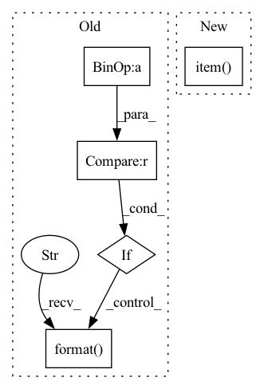

Pattern ID :16588

Before Change
batch_time.update(time.time() - end)
end = time.time()
if idx % opt.print_freq == 0:
print("Test: [{0}/{1}]\t"
"Time {batch_time.val:.3f} ({batch_time.avg:.3f})\t"
"Loss {loss.val:.4f} ({loss.avg:.4f})\t"
"Acc@1 {top1.val:.3f} ({top1.avg:.3f})\t"
"Acc@5 {top5.val:.3f} ({top5.avg:.3f})".format(
idx, len(val_loader), batch_time=batch_time, loss=losses,
top1=top1, top5=top5))
print(" * Acc@1 {top1.avg:.3f} Acc@5 {top5.avg:.3f}"
.format(top1=top1, top5=top5))
After Change
// measure accuracy and record loss
acc1, acc5 = accuracy(output, target, topk=(1, 5))
losses.update(loss.item(), input.size(0))
top1.update(acc1.item(), input.size(0))
top5.update(acc5.item(), input.size(0))
// measure elapsed time
In pattern: SUPERPATTERN
Frequency: 3
Non-data size: 5
Instances
Fragment ID: 55786555
Project Name: alldbi/supermix
Commit Name: de2dc8fea6b6faabe7fb5ac43a7f363124b2503f
Time: 2020-01-01
Author: ali.dabouei@gmail.com
File Name: helper/loops.py
M Class Name: AnonimousClass
N Class Name: AnonimousClass
M Method Name: validate(4)
N Method Name: validate(4)
M Parent Class:
N Parent Class:
M File Name: helper/loops.py
N File Name: helper/loops.py
M Start Line: 230
M End Line: 261
N Start Line: 279
N End Line: 286
'>
Before Change
enc = pickle.dumps(data)
enc_size = len(enc)
if enc_size + 2 > max_size:
raise ValueError(
"encoded data exceeds max_size: {}".format(enc_size + 2))
assert max_size < 255*256
buffer_[0] = enc_size // 255 // this encoding works for max_size < 65k
buffer_[1] = enc_size % 255
After Change
broadcast arbitrary data from root_rank to all nodes.
enc = pickle.dumps(data)
max_size = hvd.allgather(torch.tensor([len(enc)]).cuda()).max().item()
buffer_, enc_byte = _encode(enc, max_size)
hvd.broadcast_(buffer_, root_rank)
'>
Fragment ID: 55786553
Project Name: chenrocks/uniter
Commit Name: bb8926528e3783f339e8f4ae58ba6ff35ae6bc26
Time: 2020-08-06
Author: Yen-Chun.Chen@microsoft.com
File Name: utils/distributed.py
M Class Name: AnonimousClass
N Class Name: AnonimousClass
M Method Name: any_broadcast(2)
N Method Name: any_broadcast(3)
M Parent Class:
N Parent Class:
M File Name: utils/distributed.py
N File Name: utils/distributed.py
M Start Line: 184
M End Line: 205
N Start Line: 196
N End Line: 203
'>
Before Change
// update
ppo.store_episode(tmp_observations)
if episode.get() % 5 == 0:
logger.info("{:.6f}, {:.2f}".format(*ppo.update()))
smoother.update(total_reward)
step.reset()
After Change
old_state = state
// agent model inference
action = ppo.act({"state": old_state.unsqueeze(0)})[0]
state, reward, terminal, _ = env.step(action.item())
state = t.tensor(state, dtype=t.float32, device=c.device) \
.flatten()
total_reward += float(reward)
'>
Fragment ID: 55786552
Project Name: iffix/machin
Commit Name: 89695fab2bc63909df0f8994bac2700f121a9b62
Time: 2020-06-16
Author: hanhanmumuqq@163.com
File Name: test/frame/algorithms/test_ppo.py
M Class Name: TestPPO
N Class Name: TestPPO
M Method Name: test_full_train(4)
N Method Name: test_full_train(3)
M Parent Class: object
N Parent Class: object
M File Name: test/frame/algorithms/test_ppo.py
N File Name: test/frame/algorithms/test_ppo.py
M Start Line: 223
M End Line: 270
N Start Line: 168
N End Line: 208